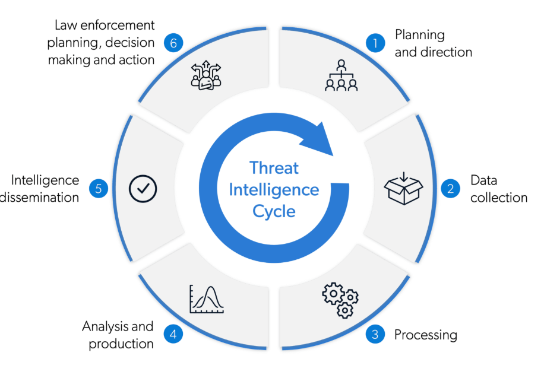
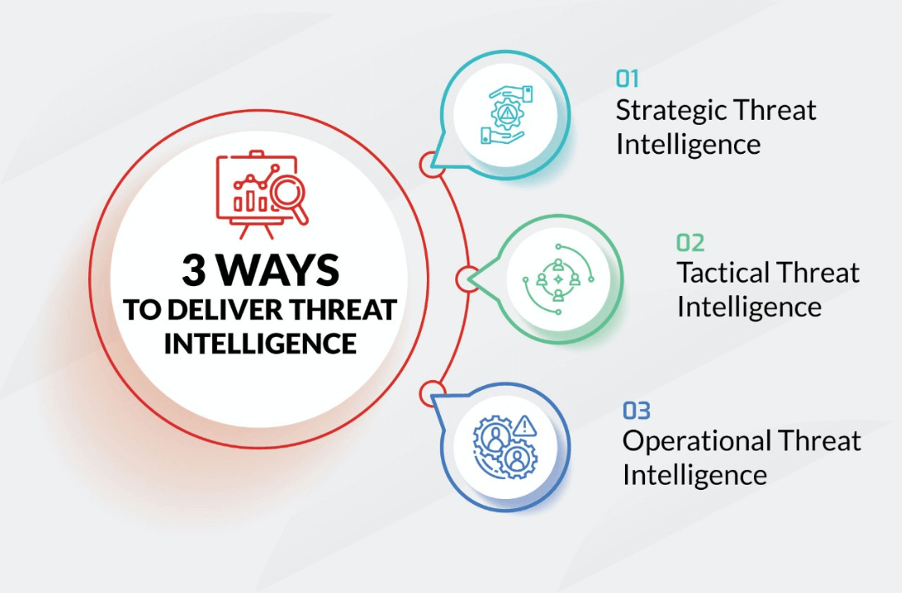

What is Cyber Threat Intelligence?


Cyber Threat Intelligence (CTI), or threat intel, is detailed, actionable information about cybersecurity threats.
Threat intelligence helps security teams take a more proactive approach to detecting, mitigating and preventing cyberattacks.
Threat intelligence refers to the collection, processing, and analysis of data to understand a threat actor's motives, targets, and attack methods.
It transforms raw data into actionable insights, enabling security teams to make informed, data-driven decisions.
This shifts organisations from a reactive to a proactive stance in defending against cyber threats. Threat intelligence is more than just raw threat information.
It is threat information that has been correlated and analysed to give security professionals an understanding of the potential threats their organisations face, including how to stop them.
Threat intelligence data origins: The key origins of cyber threat data
- Open source intelligence (OSINT): Information on public platforms, such as news platforms.
- Dark web intelligence: Anonymous and encrypted information about potential cyber-attacks.
- Internal log and external threat feeds: Insights from internal sources and third-party providers.
Threat intelligence cycle
- Planning and direction
- Collection
- Processing and exploitation
- Analysis
- Dissemination
- Feedback
Planning and direction
Cyber intelligence begins with planning and direction, which enables effective preparation for any potential threat.
Threat data Collection
When a security team collects Threat data to meet intelligence requirements, threat data can come from different sources, some common ones include threat intelligence feeds, information-sharing communities and internal security logs.
Processing
Processing is the step where the data collection is correlated to make analyse easier. Processing includes a threat intelligence framework to contextualise data filtering out false positive. which might be considered a key component of a threat intelligence platform, as it is a potent tool for analysts.
Analysis
Analysis brings together all collected and processed information and extracts the threat intelligence insights they need to meet requirements. For the use of new or key information to be able to spot patterns in data and vulnerabilities.
Dissemination
Dissemination is the phase where the analyst takes all the information and insights they have identified and applies the relevant actions for their customers. The actions would include implementing new SIEM detection to target newly identified threat indicators, and updating the firewall to block suspicious IP addresses and domain names.
Feedback
Feedback involves where stakeholders and analysts reflect on the most recent threat intelligence cycle to determine whether requirements were met, and any new intelligence gaps identified will inform the next round of the lifecycle.
What are the types of threat intelligence?
- Stragic threat intelligence
- Tactical Threat Intelligence
- Techincal Threat intelligence
- Operational Threat intelligence
Strategic threat Intelligence
Strategic threat intelligence provides a broad view of the threat landscape for organisations. It focuses on risks, potential vulnerabilities and threat actors' goals. This type of intelligence helps guide overall security strategy and resource allocation, offering insights that are less technical but still important for long-term planning and risk management.
Tactical Threat Intelligence
Tactical threat intelligence provides specific details on threat actors' tactics and techniques, as well as procedures for TTP for security teams. It helps to identify potential attack vectors and guides the development of defence strategies. This intelligence highlights system vulnerabilities and provides insights on how to detect and mitigate specific types of attacks, ultimately strengthening existing controls.
Technical Threat Intelligence
Technical Threat Intelligence focuses on specific indicators of attacks, such as suspicious IP addresses, phishing email content, malware samples, and fraudulent URLs. It serves as the basis for analysing and identifying ongoing or potential attacks. Timing is important for these types of intelligence, as many indicators quickly become outdated, requiring rapid sharing and implementation of countermeasures.
Operational Threat Intelligence
An Operational threat intelligence focuses on the details of how attacks are carried out, including their nature, motive and timing. This information is gathered covertly, such as by infiltrating hacker forums or monitoring online discussions. While difficult to obtain, it provides valuable insights into the mindset and methods of potential attackers, helping organisations prepare for and prevent future threats.
Two examples of where to find tools for Threat investigation
- OSINT Framework
- More information on OSINT framework
- theHarvester
- More information on theHarvester
OSINT Framework
OSINT framework is an open-source intelligence involving gathering publicly accessible data from sources such as news articles, social media posts, government reports and online forums. It provides a structured approach to gathering publicly available information. It is a web-based offering of tools and techniques for open-source data analysis. It is used to organise open-source intelligence by source, relevance, type, and context. And is widely used across sectors, including government, law enforcement, and corporate security, for data-gathering needs.
theHarvester
The Harvester is included in the Kali Linux distribution. A comprehensive tool for gathering information on subdomains, virtual hosts, open ports, and email addresses for any company or website. The source includes PGP servers, Google, Bing, and social networks such as LinkedIn. It is used for passive and active penetration testing, and the initial stages only needed an HTTP request to retrieve.
These tools enable organisations to identify and respond to cyber threats quickly and effectively, no matter the size of security teams.
More information on Tools for Threat investigationSpecialists in cyber security
Cyber security career pathways routes into the profession
- Cyber threat intelligence
- Security testing
- Identity and access management
- Cyber security governance and Risk management